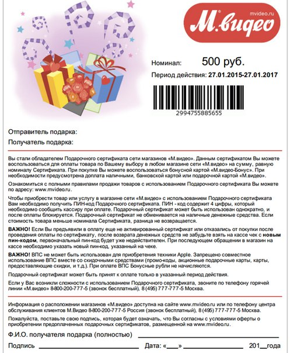
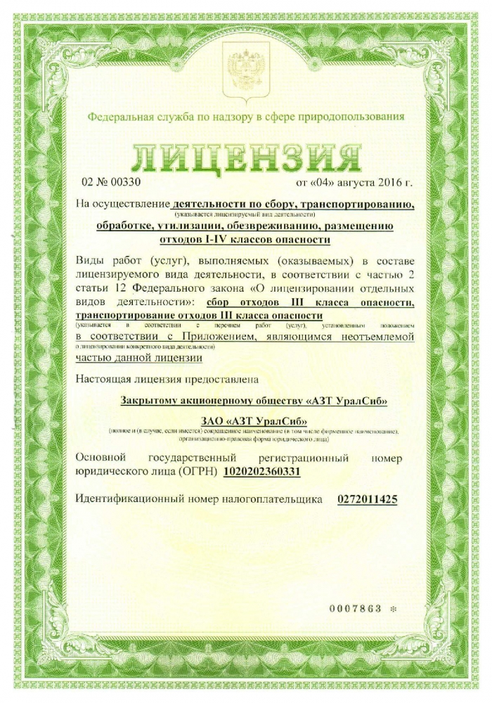

О нас |
Контакты |
История предприятия |
Фото и видео |
История предприятия

Розничная сеть «М.Видео» — одна из крупнейших
розничных сетей по объёмам продаж электроники
и бытовой техники в России. «М.Видео» осуществляет
свою деятельность с 1993 года и является первой
на российском рынке сетью, реализовавшей
полноценный омниканальный подход к продажам — это
единый ассортимент, цена и сервис как при покупке
в магазинах, так и онлайн. Ритейлер предлагает своим
покупателям несколько десятков тысяч наименований
аудио/видео и цифровой техники, мелкой и крупной
бытовой техники, медиатоваров, а также аксессуаров.
Магазины «М.Видео» имеют единый формат
и специальную концепцию дизайна. Помимо
эффективного формата розничной торговли
и ориентированной на покупателя концепции магазина,
компания предлагает клиентам высококлассную
сервисную поддержку под брендом «М.Сервис». Эксперты
«М.Кредит» помогут быстро заполнить анкету и получить
одобрение сразу от нескольких банков-партнёров.
«М.Видео» является одним из пионеров онлайн-ритейла
в России. Первый интернет-магазин «М.Видео» был
открыт в 2001 году, а с 2014 года компания начала
внедрение омниканальной бизнес-модели. Концепция
ONE RETAIL — следующий шаг в цифровой трансформации
нашего бизнеса, заключающийся в создании единого
опыта приобретения потребительской электроники
во всех точках контакта Группы и клиента — на интернет-
сайте, в мобильном приложении и в сети магазинов —
с максимально персонализированным сервисом.
Нашим приоритетом является создание лучшего
и однородного клиентского опыта во всех каналах
продаж. «М.Видео» развивает проект RTD, в рамках
которого консультанты в магазинах обслуживают
покупателей с помощью смартфонов с программным
обеспечением, позволяющим существенно повысить
персонализацию сервиса. Сегодня все продавцы
«М.Видео» могут авторизовать вас в магазине через
программу лояльности, уточнить количество накопленных
Бонусных рублей и размер скидок и сделать выгодное
персональное предложение. С 2018 года в магазинах
«М.Видео» появились зоны нового опыта (experience-
зоны), в которых посетителям рассказывают о новейших
технологиях, таких как умный дом, виртуальная
реальность (VR), 3D-печать и др., а также демонстрируют
инновационные товары «М.Видео» и дают возможность
протестировать их самостоятельно. Наряду с элементами
корпоративного дизайна «М.Видео» важной
составляющей оформления торгового пространства
являются выделенные зоны вендоров, такие как бренд-
зоны Apple, Samsung, Miele, зоны Smart Home (умный дом)
Perenio и многие другие. Всего на конец 2018 года в сети
«М.Видео» установлено около 11,8 тыс. вендорских зон
и демостендов.
Наши лицензии, и сертификаты
 